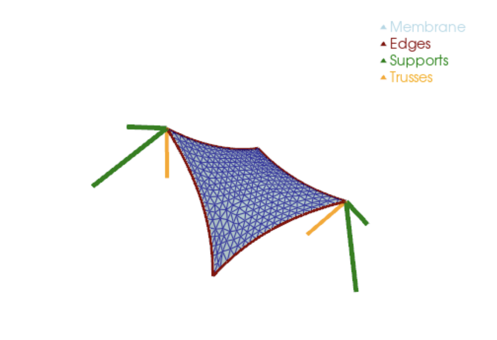
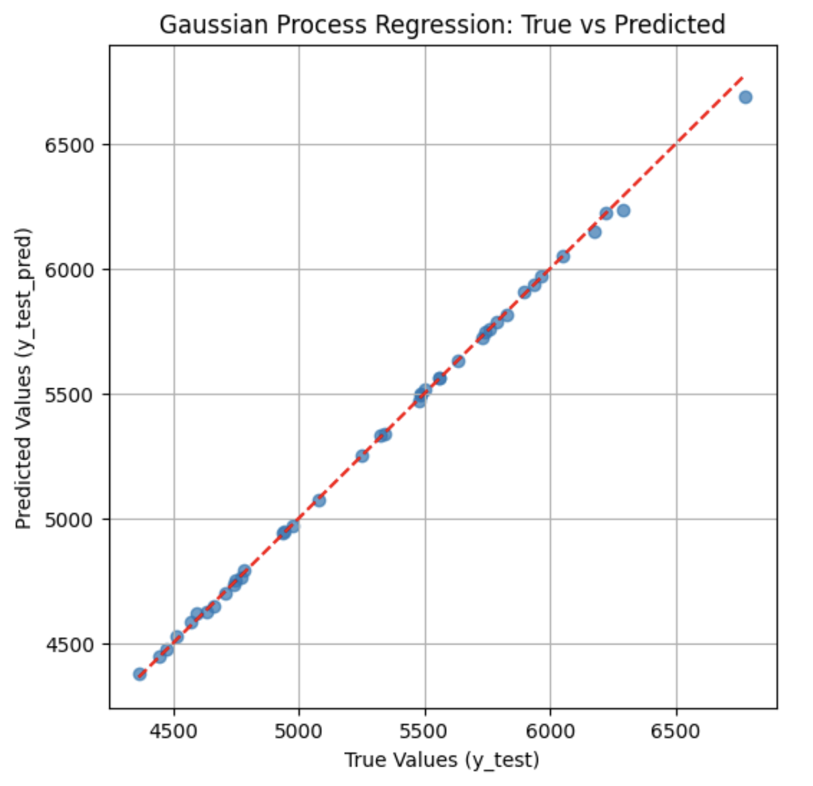
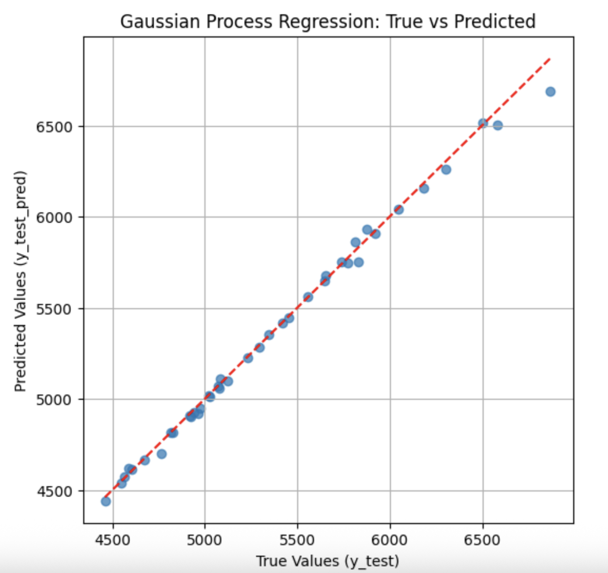

For the past few weeks, I have been working on a project “Computer Experiments” as part of my Case Studies course at TU Dortmund. We have delved into the world of structural analysis and the world of Finite Element Method analysis and surrogate models. This post aims to capture the ideas behind the project and an implementation of some interesting research I found.
Snow Load on a Sun-Sail
This is a sun-sail structure used for providing shade outdoors. It looks great, but what happens when a massive snowstorm hits? We need to know the exact load that will make it fail.

The Computational Challenge
KratosMultiphysics provides specialized functions for implementing finite method analysis models. However, these simulations have a high computational cost. This is because it needs to solve ODEs for all particles and aggregate the results for each point. Thus, getting results for multiple snow loads for a complete analysis is not possible. Surrogate models come into the picture here; these are machine learning models whose job is to approximate the results of the expensive FEM model. These models can be anything - simple linear regressors, neural networks, random forests, etc.
Our process involves:
- Run the expensive FEM analysis on a small budget (n=200 points)
- Train the surrogate model based on these results.
- Use the surrogate model for near-instant inference.
Design of Experiments
Since we have to run the FEM model for the data points, we have a choice to make: Which 200 Points to Pick?
This is the make-or-break part of our whole plan. Our fast model is only as good as the 200 training points we feed it. We have a huge "design space" (material properties, etc.), and we need to choose the points that represent that space as best as possible.
We can pick our points either:
- Statically: Select all 200 points at the start, run them, and then train the model.
- Sequentially: Select a few, run them, analyze the results to see where we need more information, and then pick the next few points smartly.
In this blog, we're focusing on the static design selection and picking all 200 points upfront. We're going to compare two methods: Latin Hypercube Sampling (LHS) and Genetic Algorithms. How do these three methods work?
- Latin Hypercube Sampling (LHS): A technique that ensures each variable is sampled equally across its range, preventing clusters of points.
- Genetic Algorithms (GA): An evolutionary optimization method that "breeds" and "mutates" sets of points to achieve an optimal distribution based on a mathematical criterion.
Model Parameters and Optimality
The following parameters define the structural properties of our sun-sail. We need to find the best way to sample the non-determinitic parameters to train our surrogate models effectively:
| Part | Parameter | Symbol | Unit | Distrib. | Mean | Std. |
|---|---|---|---|---|---|---|
| Membrane | Young's modulus | \(E_{mem}\) | GPa | Lognormal | 0.6 | 0.09 |
| Membrane | Poisson's ratio | \(\nu_{mem}\) | Uniform | 0.4 | 0.0115 | |
| Membrane | Thickness | \(t_{mem}\) | mm | Deterministic | 1 | |
| Membrane | Pre-stress | \(\sigma_{mem}\) | MPa | Lognormal | 4 | 0.8 |
| Membrane | Surface loading | \(f_{mem}\) | kPa | Gumbel | 0.4 | 0.12 |
| Membrane | Rupture stress | \(\sigma_{mem,y}\) | MPa | Lognormal | 11 | 1.650 |
| Truss | Young's modulus | \(E_{tru}\) | GPa | Deterministic | 205 | |
| Truss | Cross sectional area | \(A_{tru}\) | cm² | Deterministic | 25 | |
| Edge Cable | Young's modulus | \(E_{edg}\) | GPa | Deterministic | 205 | |
| Edge Cable | Diameter | \(d_{edg}\) | mm | Deterministic | 12 | |
| Edge Cable | Pre-stress | \(\sigma_{edg}\) | MPa | Lognormal | 353.678 | 70.735 |
| Support Cable | Young's modulus | \(E_{sup}\) | GPa | Deterministic | 205 | |
| Support Cable | Diameter | \(d_{sup}\) | mm | Deterministic | 12 | |
| Support Cable | Pre-stress | \(\sigma_{sup}\) | MPa | Lognormal | 400.834 | 80.166 |
Here,
Based on these distributions, we need to sample 200 points based on our design. We use the scipy.stats.qmc.LatinHypercube module for building an LHS sample out of the box. We then use this sample as input for the genetic algorithm. The file lhs_optimizer.py contains the code.
To optimize the point distribution, we use the Force Criterion \(G(L)\). This treats sample points as electrically charged particles, minimizing the sum of their repulsive forces: $$G(L):=\sum_{i=1}^{N}\sum_{j=i+1}^{N}\frac{1}{||x_{i}-x_{j}||^{2}}$$
The initial Latin Hypercube Sample (LHS) is fed into a Genetic Algorithm (GA), which constructs a population of 50 LHS samples and evolves them over 5000 iterations.
Out-of-the-box LHS
Minimum Distance Squared (d(L)) : 0.046
Min Distance Occurrences (n(L)): 1
Force Criterion (G(L)) : 22149.1128
Genetic Algorithm Optimization
Initial G(L): 21900.851242
Stopping criterion met at generation 2290
Final G(L): 20421.162951
Minimum Distance Squared (d(L)) : 0.234
Min Distance Occurrences (n(L)): 8
Force Criterion (G(L)) : 20421.163
Maximin LHS (Best of 50 Runs)
Minimum Distance Squared (d(L)) : 0.068
Min Distance Occurrences (n(L)): 1
Force Criterion (G(L)) : 22154.941
Here we can see that the Genetic Algorithm gives a sample with the largest minimum distance between the closest points and the lowest \(G(L)\) value, indicating a more optimal spread of points in the design space.
Fitting a Gaussian Process
To enable efficient inference, we now construct a surrogate model of the system. We use Gaussian Process Regression (GPR), a probabilistic and non-parametric method that places a distribution over functions rather than fitting a single deterministic model.
An RBF kernel, scaled by a constant factor, is employed, and the kernel hyperparameters are optimized during training. In addition to point predictions, GPR provides an associated predictive standard deviation, which is particularly valuable for quantifying uncertainty and assessing confidence in individual predictions.
The model is fitted using the
GaussianProcessRegressor
class from scikit-learn.
Model Performance
GA-Optimized Design
R² (Train) : 1.000000 R² (Test) : 0.999011 MSE (Train): 6.232487e-11 MSE (Test) : 364.330749
Simple LHS Design
R² (Train) : 1.000000 R² (Test) : 0.995251 MSE (Train): 1.152095e-10 MSE (Test) : 1752.885582


This study confirms that optimizing the design of experiments using Genetic Algorithms can substantially improve the accuracy and reliability of surrogate models for complex structural engineering problems.